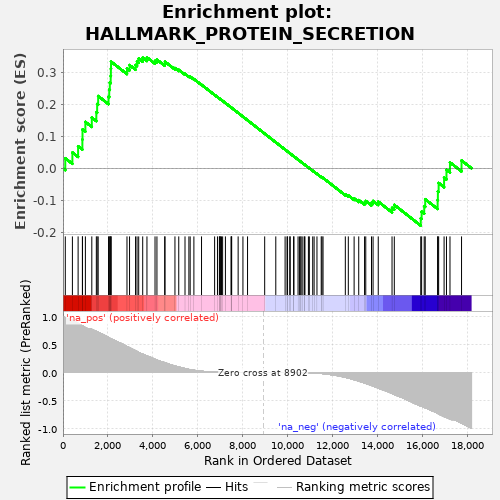

| | | Dataset | deseq_res_for_gsea |
| Phenotype | NoPhenotypeAvailable |
| Upregulated in class | na_pos |
| GeneSet | HALLMARK_PROTEIN_SECRETION |
| Enrichment Score (ES) | 0.34806108 |
| Normalized Enrichment Score (NES) | 1.1422446 |
| Nominal p-value | 0.15714286 |
| FDR q-value | 0.6682835 |
| FWER p-Value | 0.97 |
Table: GSEA Results Summary

Fig 1: Enrichment plot: HALLMARK_PROTEIN_SECRETION
Profile of the Running ES Score & Positions of GeneSet Members on the Rank Ordered List
| PROBE | GENE SYMBOL | GENE_TITLE | RANK IN GENE LIST | RANK METRIC SCORE | RUNNING ES | CORE ENRICHMENT | | 1 | BNIP3 | | | 102 | 0.976 | 0.0316 | Yes |
| 2 | ARFGEF1 | | | 418 | 0.933 | 0.0497 | Yes |
| 3 | VAMP7 | | | 672 | 0.877 | 0.0691 | Yes |
| 4 | RPS6KA3 | | | 862 | 0.836 | 0.0905 | Yes |
| 5 | TOM1L1 | | | 868 | 0.836 | 0.1221 | Yes |
| 6 | VPS45 | | | 995 | 0.803 | 0.1457 | Yes |
| 7 | RAB14 | | | 1281 | 0.770 | 0.1592 | Yes |
| 8 | ATP6V1B1 | | | 1482 | 0.736 | 0.1762 | Yes |
| 9 | COPB1 | | | 1519 | 0.726 | 0.2019 | Yes |
| 10 | NAPA | | | 1564 | 0.719 | 0.2268 | Yes |
| 11 | RAB22A | | | 2025 | 0.625 | 0.2252 | Yes |
| 12 | STX7 | | | 2056 | 0.618 | 0.2471 | Yes |
| 13 | GBF1 | | | 2082 | 0.611 | 0.2690 | Yes |
| 14 | VPS4B | | | 2121 | 0.602 | 0.2898 | Yes |
| 15 | YIPF6 | | | 2129 | 0.601 | 0.3124 | Yes |
| 16 | SEC31A | | | 2136 | 0.600 | 0.3349 | Yes |
| 17 | STAM | | | 2845 | 0.464 | 0.3134 | Yes |
| 18 | TMED2 | | | 2959 | 0.443 | 0.3241 | Yes |
| 19 | RAB2A | | | 3226 | 0.390 | 0.3242 | Yes |
| 20 | ANP32E | | | 3292 | 0.375 | 0.3349 | Yes |
| 21 | ARCN1 | | | 3366 | 0.358 | 0.3445 | Yes |
| 22 | ZW10 | | | 3544 | 0.328 | 0.3472 | Yes |
| 23 | STX16 | | | 3733 | 0.296 | 0.3481 | Yes |
| 24 | ARFGEF2 | | | 4092 | 0.235 | 0.3372 | No |
| 25 | EGFR | | | 4177 | 0.223 | 0.3410 | No |
| 26 | OCRL | | | 4522 | 0.176 | 0.3287 | No |
| 27 | STX12 | | | 4536 | 0.175 | 0.3347 | No |
| 28 | TMX1 | | | 4978 | 0.116 | 0.3147 | No |
| 29 | ARFIP1 | | | 5147 | 0.098 | 0.3091 | No |
| 30 | ADAM10 | | | 5425 | 0.070 | 0.2964 | No |
| 31 | TSG101 | | | 5598 | 0.054 | 0.2890 | No |
| 32 | AP3S1 | | | 5655 | 0.050 | 0.2878 | No |
| 33 | KIF1B | | | 5820 | 0.039 | 0.2802 | No |
| 34 | ATP7A | | | 6160 | 0.022 | 0.2623 | No |
| 35 | USO1 | | | 6742 | 0.005 | 0.2303 | No |
| 36 | ARF1 | | | 6869 | 0.004 | 0.2235 | No |
| 37 | CLTA | | | 6952 | 0.003 | 0.2191 | No |
| 38 | ERGIC3 | | | 6969 | 0.003 | 0.2183 | No |
| 39 | CAV2 | | | 6986 | 0.003 | 0.2175 | No |
| 40 | SNAP23 | | | 7010 | 0.002 | 0.2163 | No |
| 41 | VAMP4 | | | 7047 | 0.002 | 0.2144 | No |
| 42 | NAPG | | | 7098 | 0.002 | 0.2117 | No |
| 43 | SNX2 | | | 7222 | 0.001 | 0.2050 | No |
| 44 | MAPK1 | | | 7472 | 0.000 | 0.1912 | No |
| 45 | ICA1 | | | 7491 | 0.000 | 0.1902 | No |
| 46 | COG2 | | | 7501 | 0.000 | 0.1897 | No |
| 47 | DNM1L | | | 7788 | 0.000 | 0.1739 | No |
| 48 | SH3GL2 | | | 8001 | 0.000 | 0.1622 | No |
| 49 | ARFGAP3 | | | 8206 | 0.000 | 0.1509 | No |
| 50 | ABCA1 | | | 8968 | -0.000 | 0.1088 | No |
| 51 | GALC | | | 9462 | -0.000 | 0.0815 | No |
| 52 | SOD1 | | | 9876 | -0.000 | 0.0587 | No |
| 53 | CTSC | | | 9962 | -0.000 | 0.0540 | No |
| 54 | SCRN1 | | | 9985 | -0.000 | 0.0527 | No |
| 55 | SEC24D | | | 10084 | -0.000 | 0.0473 | No |
| 56 | PPT1 | | | 10103 | -0.000 | 0.0463 | No |
| 57 | YKT6 | | | 10253 | -0.000 | 0.0381 | No |
| 58 | LAMP2 | | | 10269 | -0.000 | 0.0373 | No |
| 59 | CLN5 | | | 10452 | -0.000 | 0.0272 | No |
| 60 | M6PR | | | 10514 | -0.001 | 0.0239 | No |
| 61 | TMED10 | | | 10577 | -0.001 | 0.0205 | No |
| 62 | GLA | | | 10583 | -0.001 | 0.0202 | No |
| 63 | ATP1A1 | | | 10665 | -0.001 | 0.0158 | No |
| 64 | CD63 | | | 10736 | -0.002 | 0.0120 | No |
| 65 | IGF2R | | | 10758 | -0.002 | 0.0109 | No |
| 66 | KRT18 | | | 10913 | -0.003 | 0.0025 | No |
| 67 | MON2 | | | 10954 | -0.004 | 0.0004 | No |
| 68 | ATP6V1H | | | 11104 | -0.006 | -0.0076 | No |
| 69 | AP1G1 | | | 11166 | -0.007 | -0.0107 | No |
| 70 | RAB9A | | | 11293 | -0.010 | -0.0173 | No |
| 71 | LMAN1 | | | 11482 | -0.017 | -0.0271 | No |
| 72 | SEC22B | | | 11516 | -0.018 | -0.0282 | No |
| 73 | CLCN3 | | | 11563 | -0.020 | -0.0300 | No |
| 74 | BET1 | | | 12554 | -0.086 | -0.0815 | No |
| 75 | AP2B1 | | | 12687 | -0.098 | -0.0851 | No |
| 76 | SGMS1 | | | 12945 | -0.128 | -0.0944 | No |
| 77 | GOSR2 | | | 13150 | -0.154 | -0.0999 | No |
| 78 | TPD52 | | | 13409 | -0.187 | -0.1070 | No |
| 79 | COPB2 | | | 13463 | -0.194 | -0.1026 | No |
| 80 | AP2M1 | | | 13718 | -0.230 | -0.1078 | No |
| 81 | PAM | | | 13788 | -0.241 | -0.1025 | No |
| 82 | SSPN | | | 14018 | -0.278 | -0.1045 | No |
| 83 | COPE | | | 14631 | -0.374 | -0.1241 | No |
| 84 | CLTC | | | 14732 | -0.392 | -0.1147 | No |
| 85 | SCAMP3 | | | 15908 | -0.599 | -0.1570 | No |
| 86 | SCAMP1 | | | 15947 | -0.604 | -0.1361 | No |
| 87 | DST | | | 16062 | -0.623 | -0.1186 | No |
| 88 | VAMP3 | | | 16107 | -0.630 | -0.0971 | No |
| 89 | GNAS | | | 16659 | -0.730 | -0.0997 | No |
| 90 | RAB5A | | | 16670 | -0.732 | -0.0724 | No |
| 91 | AP2S1 | | | 16704 | -0.739 | -0.0460 | No |
| 92 | RER1 | | | 16946 | -0.788 | -0.0294 | No |
| 93 | AP3B1 | | | 17052 | -0.804 | -0.0046 | No |
| 94 | GOLGA4 | | | 17208 | -0.832 | 0.0186 | No |
| 95 | TSPAN8 | | | 17722 | -0.905 | 0.0247 | No |
Table: GSEA details [plain text format]
Fig 2: HALLMARK_PROTEIN_SECRETION: Random ES distribution
Gene set null distribution of ES for HALLMARK_PROTEIN_SECRETION